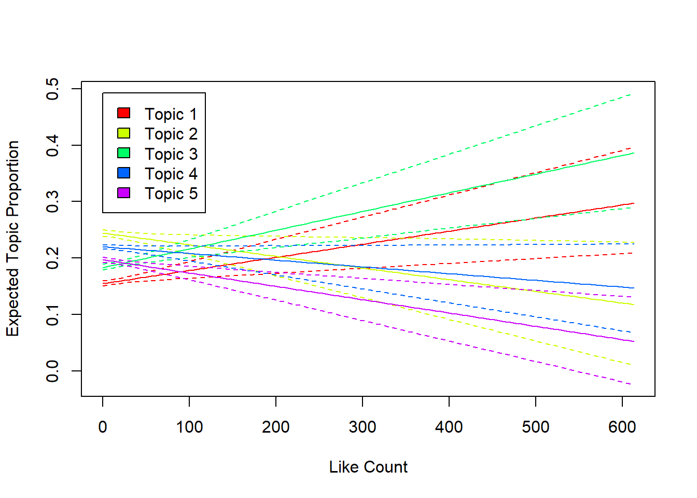

# Pakete laden
library(quanteda)
library(tidyverse)
# Daten einlesen
bs_posts <- read.csv("./data/bluesky_data.csv") # Dateipfad ggf. anpassen
comments_yt <- read.csv("./data/youtube_data.csv") # Dateipfad ggf. anpassen
# Korpus erstellen
bluesky_corpus <- bs_posts %>%
distinct(uri, .keep_all = TRUE) %>% # jeder Post sollte nur einmal im Korpus vorkommen
filter(is_reskeet == FALSE) %>% # keine Reposts
select(uri, cid,
author_handle, author_name,
indexed_at, reply_count, repost_count,
like_count, quote_count,
is_reskeet,
text) %>%
corpus(docid_field = "uri",
text_field = "text")
youtube_corpus <- comments_yt %>%
select(CommentID, VideoID, ParentID,
AuthorDisplayName,
PublishedAt, ReplyCount, LikeCount,
Comment) %>%
corpus(docid_field = "CommentID",
text_field = "Comment")
# Tokenisierung & Bereinigung
tokens_bluesky <- tokens(bluesky_corpus,
remove_punct = TRUE,
remove_symbols = TRUE,
remove_numbers = TRUE,
remove_url = TRUE)
tokens_youtube <- tokens(youtube_corpus,
remove_punct = TRUE,
remove_symbols = TRUE,
remove_numbers = TRUE,
remove_url = TRUE)
# Kleinschreibung & Stoppwörter
tokens_bluesky <- tokens_bluesky %>%
tokens_tolower() %>% # Kleinschreibung
tokens_remove(stopwords("de")) %>% # Entfernung von deutschen Stoppwörtern
tokens_remove("dass") # Entfernung von "dass"
tokens_youtube <- tokens_youtube %>%
tokens_tolower() %>% # Kleinschreibung
tokens_remove(stopwords("de")) %>% # Entfernung von deutschen Stoppwörtern
tokens_remove("dass") # Entfernung von "dass"
# DFM erstellen
dfm_bluesky <- dfm(tokens_bluesky)
dfm_youtube <- dfm(tokens_youtube)18 Topic Models
Topic Modeling ist eine Methode aus der Kategorie des Unsupervised Machine Learning, mit der versucht wird, Themen in einem Textkorpus zu identifizieren (siehe hierzu auch den entsprechenden Abschnitt im Buch Computational Analysis of Communication.
Man kann sich Topic Models in gewisser Weise als Kombination von Faktorenanalyse und Clustering vorstellen. Wie bei der Faktorenanalyse werden die Themen als latente Variablen betrachtet, die durch die beobachteten Wörter in den Dokumenten definiert sind. Wie beim Clustering werden Dokumente basierend auf ihrer Ähnlichkeit in Bezug auf die Themen gruppiert. Es geht also um die Reduktion von Dimensionen (von Wörtern zu Themen) und die Gruppierung (von Dokumenten nach Themen).
Für Topic Models gibt es im wesentlichen zwei Grundannahmen:
Themen sind Mischungen aus Wörtern: Ein Thema ist eine Ansammlung von Wörtern mit unterschiedlichen Wahrscheinlichkeiten. Beim Thema „Sport“ ist die Wahrscheinlichkeit, dass das Wort „Ball“ vorkommt, hoch, während die Wahrscheinlichkeit für das Wort „Demokratie“ sehr gering ist.
Dokumente sind Mischungen aus Themen: Ein einzelnes Dokument kann mehrere Themen enthalten. Ein Zeitungsartikel könnte z.B. zu 60 % aus Sport, zu 30 % aus Finanzen und zu 10 % aus Politik bestehen.
Der zugrundeliegende Algorithmus versucht entsprechend, zwei Wahrscheinlichkeiten zu optimieren: die Wahrscheinlichkeit, dass ein Wort zu einem Thema gehört, und die Wahrscheinlichkeit, dass ein Dokument zu einem Thema gehört. Das Ergebnis ist eine Reihe von Themen, die durch die Wörter definiert sind, die am wahrscheinlichsten in diesen Themen vorkommen, sowie die Verteilung der Themen über die Dokumente. Oder als Formel ausgedrückt:
\[P(\text{word} | \text{document}) = \sum_{\text{topic}} P(\text{word} | \text{topic}) \times P(\text{topic} | \text{document})\]
Zur Erläuterung: \(P(\text{word} | \text{document})\) ist die Wahrscheinlichkeit, dass ein bestimmtes Wort in einem bestimmten Dokument vorkommt. Diese wird berechnet als Summe über alle Themen, wobei jedes Thema durch die Wahrscheinlichkeit definiert ist, dass das Wort zu diesem Thema gehört (\(P(\text{word} | \text{topic})\)) und die Wahrscheinlichkeit, dass das Dokument zu diesem Thema gehört (\(P(\text{topic} | \text{document})\)).
18.1 Setup
Wie gewohnt müssen wir zunächst die benötigten Pakete insladen, die Daten importieren und diese aufbereiten.
18.2 LDA
Die älteste und am weitesten verbreitete Methode für die Topic-Modellierung ist die Latent Dirichlet Allocation (LDA). Diese ist im R-Paket topicmodels (Grün & Hornik, 2011) implementiert.
install.packages("topicmodels")library(topicmodels)Um die Berechnung des Topic Models etwas zu beschleunigen, reduzieren wir die Anzahl der Wörter in der DFM , indem wir nur Wörter behalten, die in mindestens 5 Posts bzw. Kommentaren enthalten sind. Zur Erinnerung: Wir können in der Funktion stm_trim() auch andere Werte für die minimale und/oder maximale Term Frequency und Document Frequency wählen (siehe Kapitel 16). Im Gegensatz zu den vorheringen Analysen behalten wir allerdings die Hashtags für die Topic Models.
dfm_bluesky_trimmed <- dfm_bluesky %>%
dfm_remove(pattern = c("bsky.social",
"@*")) %>%
dfm_trim(min_docfreq = 5)
dfm_youtube_trimmed <- dfm_youtube %>%
dfm_remove(pattern = c("youtube.com",
"@*")) %>%
dfm_trim(min_docfreq = 5)Nun können wir Topic Models für die beiden Korpora berechnen. Hierfür müssen wir zunächst die Anzahl der Themen festlegen, die wir entdecken wollen. In diesem Beispiel wählen wir 5 Themen für beide Korpora. Es ist jedoch wichtig zu beachten, dass die Wahl der Anzahl der Themen eine wichtige Rolle spielt und von der spezifischen Fragestellung und den Daten abhängt.
Hinweis: Je nach Umfang der Daten und der Anzahl der Themen kann die Berechnung eines LDA-Models einige Zeit in Anspruch nehmen.
k <- 5 # Anzahl der Themen
# LDA für YouTube
lda_yt <- LDA(convert(dfm_youtube_trimmed,
to = "topicmodels"), # LDA erwartet eine DFM im Format des Pakets topicmodels, daher müssen wir die DFM mit convert() umwandeln
k = k,
control = list(seed = 1234)) # Setzen eines Seeds für Reproduzierbarkeit
terms(lda_yt, 10) # Ausgabe der 10 wahrscheinlichsten Wörter pro Thema Topic 1 Topic 2 Topic 3 Topic 4 Topic 5
[1,] "deutschland" "frau" "wählen" "mal" "afd"
[2,] "mehr" "immer" "einfach" "cdu" "bsw"
[3,] "land" "baerbock" "wer" "ja" "parteien"
[4,] "macht" "weidel" "menschen" "merz" "wähler"
[5,] "ganz" "leute" "schon" "csu" "linke"
[6,] "klar" "gibt" "spiegel" "grünen" "wäre"
[7,] "warum" "bitte" "gehen" "ukraine" "berlin"
[8,] "jahre" "genau" "geht" "krieg" "spd"
[9,] "recht" "viele" "geld" "schon" "demokratie"
[10,] "geht" "leider" "linken" "partei" "wahl" # LDA für Bluesky
lda_bs <- LDA(convert(dfm_bluesky_trimmed,
to = "topicmodels"), # LDA erwartet eine DFM im Format des Pakets topicmodels, daher müssen wir die DFM mit convert() umwandeln
k = k,
control = list(seed = 1234)) # Setzen eines Seeds für Reproduzierbarkeit
terms(lda_bs, 10) # Ausgabe der 10 wahrscheinlichsten Wörter pro Thema Topic 1 Topic 2 Topic 3 Topic 4 Topic 5
[1,] "menschen" "krieg" "ukraine" "müssen" "the"
[2,] "mehr" "land" "müssen" "europa" "to"
[3,] "deutschland" "unsere" "mehr" "sicherheit" "and"
[4,] "merz" "menschen" "europa" "unsere" "of"
[5,] "gibt" "ukraine" "sicherheit" "deutschland" "a"
[6,] "jahren" "demokratie" "geht" "ukraine" "is"
[7,] "heute" "braucht" "heute" "usa" "we"
[8,] "trump" "europa" "dafür" "politik" "for"
[9,] "seit" "bundesregierung" "neue" "menschen" "putin"
[10,] "land" "geht" "iran" "eu" "menschen"Wie man sehen kann, sind die Themen, die von LDA entdeckt werden, nicht immer leicht zu interpretieren. Um die Identifikation von Themen zu verbessern, gibt es mehrere Optionen. Neben der Anpassung der Anzahl der Themen kann auch die Datenaufbereitung einen großen Einfluss auf die Ergebnisse haben. So können z.B. weitere Tokens entfernt oder die minimale bzw. maximale Term Frequency oder Document Frequency angepasst werden.
Um eine wiederholte Berechnung zu vermeiden und um mit den Ergebnissen auch später nioch weitarbeiten zu können, empfiehlt es sich, die berechneten Modelle sowie die zugehärigen DFMs zu speichern. Dies geht z.B. mit der Funktion saveRDS().
# LDA-Modelle speichern
saveRDS(lda_yt, "./data/topicmodels/lda_youtube.rds") # Dateipfad ggf. anpassen
saveRDS(lda_bs, "./data/topicmodels/lda_bluesky.rds") # Dateipfad ggf. anpassen
# DFM-Modelle speichern
saveRDS(dfm_youtube_trimmed, "./data/topicmodels/dfm_youtube_trimmed.rds") # Dateipfad ggf. anpassen
saveRDS(dfm_bluesky_trimmed, "./data/topicmodels/dfm_bluesky_trimmed.rds") # Dateipfad ggf. anpassen18.3 STM
Eine Weiterentwicklung von LDA ist das Structural Topic Model (STM), welches im R-Paket stm (Roberts et al., 2019) implementiert ist. STM ermöglicht es, externe Variablen bzw. Metadaten zu Dokumenten (z.B. Autor:innen, Zeit, Parteizugehörigkeit) direkt in die Berechnung der Themen einzubeziehen. Dies kann die Identifikation von Themen verbessern und ermöglicht es, die Beziehung zwischen Themen und diesen Variablen zu untersuchen. Mit einem STM und dem Paket stm lassen sich auch Veränderungen von Themen über die Zeit untersuchen. Mit deinem Ansatz fällt STM zwischen die Kategorien Unsupervised und Supervised, weshalb man solche Methoden auch als Semi-Supervised beschreibt.
install.packages("stm")library(stm)Es gibt für ein STM verschiedene Möglichkeiten, wie die externen Variablen in die Berechnung einbezogen werden können: Als sogenannten “Prevalence Covariates” oder als “Content Covariates”. Prevalence gibt an, inwieweit ein Dokument mit einem Thema in Verbindung steht. Content bezieht sich auf die innerhalb eines Themas verwendeten Begriffe. So lässt sich z.B. untersuchen, ob es bestimmte Variablen (Eigenschaften eines Dokuments) gibt, welche die Häufigkeit eines Themas beeinflussen (Prevalence) oder ob es Unterschiede zwischen Gruppen in den typischen Wörtern für ein Thema gibt (Content). Sowohl prevalence als auch content sind Argumente der Funktion stm(). Da es bei content um Gruppenvergleiche kann als Eingabe hier nur eine einzige kategoriale Variable (ein Faktor) verwendet werden. Für prevalence sind auch kontinuierliche numerische Variablen möglich.
Im nachfolgenden Beispiele berechnen wir ein STM für die Bluesky-Daten und nutzen den Like Count der Kommentare als “Prevalence Covariate”.
Hinweis: Die Berechnung eines STM ist deutlich rechenintensiver als die Berechnung eines LDA, weshalb es hier etwas länger dauern kann, bis die Ergebnisse vorliegen.
# DFM in STM-Format umwandeln
stm_data <- convert(dfm_youtube_trimmed, to = "stm")
# STM berechnen
stm_model <- stm(documents = stm_data$documents,
vocab = stm_data$vocab,
K = 5,
prevalence = ~ LikeCount,
data = stm_data$meta,
seed = 1234,
verbose = FALSE)
# Top Wörter pro Thema
labelTopics(stm_model)Topic 1 Top Words:
Highest Prob: mehr, cdu, wählen, parteien, leute, ganz, wahl
FREX: mehr, wählen, parteien, wahl, egal, union, richtig
Lift: anna-lena, arsch, art, durchaus, einseitige, euro, fest
Score: mehr, cdu, wählen, grad, parteien, wahl, leute
Topic 2 Top Words:
Highest Prob: deutschland, immer, wer, weidel, geht, land, wähler
FREX: wer, land, linke, klar, besser, sagt, jahren
Lift: auge, bereichen, diplomatische, dr, gehirn, glaube, hält
Score: deutschland, gottes, außenministern, gegensatz, wer, geht, land
Topic 3 Top Words:
Highest Prob: baerbock, spd, csu, berlin, grünen, wurde, demokratie
FREX: baerbock, berlin, grünen, demokratie, wirklich, welt, politiker
Lift: anfang, anna, besten, dobrint, dumme, dummheit, eingeladen
Score: baerbock, spd, berlin, schaden, csu, demokratie, grünen
Topic 4 Top Words:
Highest Prob: afd, ja, frau, schon, merz, menschen, bsw
FREX: merz, bsw, gibt, russland, jahre, ja, dabei
Lift: flüchtlinge, mauer, schlimme, schluss, weitsicht, behandelt, berichterstattung
Score: afd, merz, ja, weder, schon, frau, bsw
Topic 5 Top Words:
Highest Prob: mal, einfach, partei, gewählt, krieg, gar, regierung
FREX: mal, partei, gewählt, krieg, nie, bekommen, gesagt
Lift: aken, bedeutet, bild, bleibt, darüber, dazwischen, debatte
Score: mal, ost, einfach, partei, krieg, gewählt, geld Was die Labels für die Top Words bedeuten, wird in der Dokumentation der Funktion labelTopics() ausführlich erklärt. “Highest Prob” sind die Wörter mit der höchsten Wahrscheinlichkeit in einem Thema. “FREX” sind die Wörter, die sowohl häufig als auch exklusiv für ein Thema sind.
Weitere Infos:
?labelTopicsDa wir im STM die Anzahl der Likes als “Prevalence Covariate” genutzt haben, können wir nun untersuchen, ob es einen Zusammenhang zwischen der Anzahl der Likes und der Wahrscheinlichkeit gibt, dass ein Dokument einem bestimmten Thema zugeordnet wird. Hierfür können wir die Funktion estimateEffect() nutzen.
# Effekt des Like Counts auf die Themenzuordnung schätzen
effect <- estimateEffect(1:5 ~ LikeCount, stm_model, meta = stm_data$meta)
# Effekt plotten (hier mit base R)
plot(effect,
covariate = "LikeCount",
topics = 1:5,
model = stm_model,
method = "continuous",
xlab = "Like Count",
ylab = "Expected Topic Proportion")
Auch hier können bzw. sollten wir das Modell sowie die zugehörigen Daten speichern, um später damit weiterarbeiten zu können.
# STM-Modell speichern
saveRDS(stm_model, "./data/topicmodels/stm_youtube.rds") # Dateipfad ggf. anpassen
# STM-Daten speichern
saveRDS(stm_data, "./data/topicmodels/stm_data_youtube.rds") # Dateipfad ggf. anpassen18.4 Evaluation und Validierung von Topic Models
Die Evaluation und Validierung von Topic Models ist ein wichtiger Schritt, um sicherzustellen, dass die entdeckten Themen sinnvoll und interpretierbar sind (Bernhard et al., 2023; Bernhard-Harrer et al., 2025). Hierfür gibt es verschiedene Möglichkeiten. Eine davon ist die manuelle Überprüfung der Top-Wörter für jedes Thema, um zu sehen, ob diese thematisch zusammenhängen. Eine andere Möglichkeit ist die Berechnung von Metriken wie der Kohärenz (coherence), Exklusivität (exclusivity) oder Perplexität (perplexity), um die Qualität der Themen zu bewerten. Die meisten der R-Pakete fürs Topic Modeling bieten hierfür Funktionen an.
Um die optimale Anzahl von Themen (k) zu finden, kann man verschiedene Werte für k ausprobieren und die Ergebnisse vergleichen. Es gibt auch Funktionen, die dabei helfen können, die optimale Anzahl von Themen zu bestimmen, stm bietet dafür z.B. die Funktion searchK().
Eine weitere gute Option für die Validierung von Topic Models ist das Paket oolong (Chan & Sältzer, 2020), mit dem sogenannte Word Intrusion und Topic Intrusion Tests möglich sind.
18.5 Weitere Methoden für die Topic-Modellierung
Neben LDA und STM gibt es noch weitere Methoden für die Topic-Modellierung, die je nach Anwendungsfall besser geeignet sein können. Hierzu gehört das Biterm Topic Model (BTM) (Yan et al., 2013), für das es das R-Paket btm gibt. Ein BTM ist besonders gut für kurze Texte (wie auch Social-Media-Potsts oder -Kommentare) geeignet. Es nutzt nicht das Konzept eines „Dokuments“, sondern zerlegt BTM alles in sogenannte Biterme, d.h. alle möglichen Wortpaare, die innerhalb eines kurzen Textabschnitts gemeinsam vorkommen. Besonders für ein BTM macht es Sinn, das Vokabular auf bestimmte Arten von Wörtern wie z.B. Nomen, Adjektive und Verben zu reduzieren. Hierfür können NLP-Pipelines mit den Paketen udpipe oder spacyR genutzt werden (siehe dazu auch den Abschnitt “Weitere Aufbereitungsschritte” in Kapitel 15).
Eine weitere Alternative ist das Keyword Assisted Topic Model (keyATM) (Eshima et al., 2024), das im R-Paket keyATM implementiert ist. keyATM ermöglicht es, Schlüsselwörter (seed words) zu definieren, die als Anker für die Themen dienen. Dies kann besonders nützlich sein, wenn man bereits eine Vorstellung davon hat, welche Themen in den Daten vorhanden sein könnten, aber dennoch offen für die Entdeckung neuer Themen sein möchte. Wie STM gehört auch keyATM in die Kategorie der Semi-Supervised Methods.
Einen ähnlichen Ansatz verfolgt das sogenannte Seeded LDA (Watanabe & Baturo, 2024), bei dem eine Liste von Schlüsselwörtern genutzt wird, um die Anfangsgewichte für die Themenzuordnung zu manipulieren. Dies kann dazu führen, dass Dokumente schneller in vordefinierte Kategorien eingeordnet werden. Das R-Paket hierfür ist seededlda.
Die nachfolgende Tabelle fasst die vorgestellten Methoden für die Topic-Modellierung zusammen und gibt eine kurze Übersicht über die zugrundeliegenden Konzepte und die Anwendungsfälle, für die sie am besten geeignet sind.
| Modeltyp | Kernkonzept / Mechanismus | Geeignete Anwendungsfälle | |
|---|---|---|---|
| Standard LDA | Word-document counts (Unsupervised). Nutzt einen Bag-of-Words-Ansatz. Nimmt an, dass ein Dokument ein Mix aus Themen ist. | Längere und idealiter auch standardisiertere Texte (z.B. Nachrichtenartikel oder Wikipedia-Einträge). | |
| BTM (Biterm) | Word-pair co-occurrences (Unsupervised). Ignoriert das Konzept “Dokument”. Arbeitet mit Wortpaaren. | Kurze Textdaten (z.B. Social-Media-Posts oder -Kommentare). | |
| STM (Structural) | Metadata-driven counting (Semi-supervised). UNutzt externe Variablen, um die Themenfindung zu steuern. | Textdaten mit relevanten Metadaten (z.B. Autor:innen, Parteizugehörigkeit, Zeit). | |
| keyATM (Keyword Assisted) | Keyword-assisted anchors (Semi-supervised). Unterscheidet zwischen vorgegebenen “seeded keywords” und unbekannten Token. | Wenn man eine fundierte Hypothese oder vordefinierte Themen hat, auf die man sich konzentrieren möchte, aber gleichzeitig auch unbekannte Themen entdecken möchte. | |
| Seeded LDA | Prior-driven weighting (Semi-supervised). Verwendet ein Wörterbuch, um die anfänglichen Startgewichte anzupassen. | Wenn man Dokumente mithilfe eines Wörterbuchs schnell in vordefinierte Kategorien einordnen möchte. |